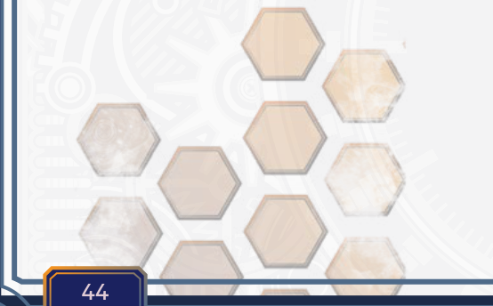

第5章——属性
在《命运之轨迹》中，属性代表你角色的核心特质。 这些属性决定了他们在身体和精神技能上的优势与劣势。共有九项属性：力量、敏捷、体魄、速度、灵魂、 记忆、共感、理性、意志。这些属性影响着从战斗表现到 社交互动的一切。 属性的等级范围为1到100或更高。11至15点是普通人类的水平。达到15点，以及之后每提升5点，你在该属性所涵盖的动作检定中可获得如下所示的+1英雄加值骰。
| 属性值 | 加值骰 |
|---|---|
| 1-5 | 挑战 |
| 5-14 | 0 |
| 15-19 | +1 |
| 20-24 | +2 |
| 25-29 | +3 |
| 30-34 | +4 |
| 35-39 | +5 |
| 40-44 | +6 |
| 45-49 | +7 |
| 50 | +8 |
在许多情况下，你的资源，如生命值和耐久，将由你的属性值派生而来。然而， 天赋和事迹是提升你属性值的唯一途径。
生成属性
队伍中的每个角色都应通过相同方式生成十项属性。不过，生成属性值有三种方法：随机掷骰、购点和属性数组。
属性数组
这是最常用的属性生成方法。采用此法时，你将以一组固定的属性数组为起点，将其分配到你认为合适的位置：22, 19, 17, 15, 15, 13, 11, 10, 10。你的优势会有最低属性要求，你必须达到这些最低属性值才能获取该优势。
随机掷骰
采用此法时，你为每项属性掷 3d8，一共九次，并依序分配。这种选项可能带来极高的属性值，但波动幅度也最大。它非常适合你尚未形成非常强烈的角色概念的情况。如果在这些 3d8 中掷出一个或多个 8，你可以额外掷 1d8 并将其加入总值。
| 属性 | 骰子 |
|---|---|
| STR | 3d8 |
| STA | 3d8 |
| AGI | 3d8 |
| SPD | 3d8 |
| SOL | 3d8 |
| EMP | 3d8 |
| MEM | 3d8 |
| RSN | 3d8 |
| RSL | 3d8 |
| REP | 10 |
暴击属性
如果你采用随机掷骰法生成属性值，当你的一次属性骰掷出最大值时，你就可以额外掷一颗同类型的骰子并加入总值。然而，每项属性最多只能获得一颗暴击属性骰，即使你掷出多个最大值。例如，你为一项属性掷 3d8（如人类这般），结果为 3、8 和 8，那么你掷 1d8 加入总值，即使你掷出了两次 8。同样，如果你掷 5d6，结果为 3、4、4、5 和 6，则你掷 1d6 加入总值。
购点
下一种方法是允许玩家用点数购买属性值。在此系统下，所有属性从 8 开始，玩家必须为每项属性花费 1 点或更多点数，才能将一项或全部属性提升到更高的数值。采用此法时，你起始拥有 60 点，可分配于各项属性之间。以此法你最高可将属性值提升至 25。你必须在游戏开始前花光所有属性点数，不可保留、转换或留存点数，也不可将属性值提升至 25 以上。如果你使用购点法或数组法，你的优势不会提升你的属性值，而是你必须达到那些最低属性值作为获取该优势的条件。
提升属性
提升属性值有数种途径。出身天赋与通用天赋可提升一项或多项属性。请务必将这些加值添加到你的属性值中。如果你随机掷骰生成属性，你的优势会将你的属性值提升至满足最低要求。随着你进度推进，提升属性值最有效的方式是将技能点用于天赋。通用天赋与那些从技能树中购买的天赋，通常会为你的属性值提供一定量的提升，例如 +2 或 +4。

理解属性
力量
该属性衡量你纯粹的肉体力量。你将把力量加值骰加到大多数近战攻击伤害和部分物理技能中。高力量的角色可能强大且体格强健，通常在战斗和搬运重物时充满自信。低力量的角色可能会避免正面对抗，转而依靠智谋或技巧。 负重。中等体型的生物若拥有普通力量，每点力量可举起并携带10磅重量。大体型生物每点力量可携带20磅。 力量技能检定。当你执行依赖纯粹肉体力量的动作时，会加上你的力量加值骰，例如举起重物、击破障碍，或在擒抱或近战中压制对手。
敏捷
敏捷属性衡量你的平衡感、优雅度和协调性，对大多数战斗技能至关重要。你会将敏捷加值加到攻击检定和许多物理技能上。然而，几乎没有任何属性是从敏捷衍生而来的。高敏捷的角色可能灵活而优雅，擅长特技、潜行或精准行动。而低敏捷的角色可能笨拙，难以保持平衡或完成精细任务，或者更偏向蛮力而非技巧。 敏捷技能检定。当动作涉及精准移动、平衡或手眼协调时，你会加上你的敏捷加值骰，例如悄声移动、使用武器攻击，或表演走钢丝等特技动作。
体魄
你的物理韧性、体格和耐力由你的体魄值来衡量。生命值和耐力通常由你的体魄值衍生。高体魄的角色看起来可能坚韧不拔，毫无怨言地忍受艰难困苦，且从不轻易疲劳。低体魄的角色则可能是那种很快就疲惫、畏惧体能挑战，或可能避免长时间消耗和严酷环境的类型。 体魄技能检定。当动作需要耐力或坚韧时，你会加上你的体魄加值骰，例如长跑、连续数小时踩水，或在持续体力消耗或严酷环境下坚守阵地。
速度
纯粹的速度和反应时间，你的速度值衡量你的身体反应能力和整体移动速度。你将速度加值骰加至防御反应检定。高速度的角色可能迅捷无比，无论是反射神经还是行动上都总是快人一步，在战斗或移动中看似总领先他人。反之，低速度的角色则可能行动迟缓，或常常错失良机，在关键时刻反应过慢。 移动。你步行时可将移动一段战斗移动距离作为一次行动；此距离为10尺，加上每颗速度加值骰5尺。你可以任意选择执行多少次移动行动。例如，若你有3次行动，你可以用它们移动至敌人身边（第一次行动），用武器攻击该敌人（第二次行动），然后移开（第三次行动）。无论你执行多少次移动行动，每次行动最多只能带你移动10尺，加上每颗速度加值骰5尺的距离。如果你有特殊的移动方式，则可能移动更远。 速度技能检定。当需要快速反应或迅速移动时，你将速度加值骰加至动作中，例如闪避、冲刺或接住坠落的物体。当你进行防御反应检定时，也会加上你的速度加值骰。
共感
你的情商、魅力与人格力量皆源于你的共感。你将在各类人际互动与创造性技能中添加你的共感加值。由共感衍生的内容极少。共感高的角色可能善于体察他人情绪，成为天生的领袖或操控者。共感低的角色可能显得冷漠，对社交信号迟钝，并可能误判情境或他人。 共感技能检定。你将在社交互动及理解他人情绪的行动中添加你的共感加值骰，例如安抚某人、说服，或是察觉某人是否在撒谎或隐瞒某事。
记忆
你的记忆衡量着你的认知回想与学习能力。你可在各种学习技能中添加你的记忆加值。你学习新公式、法术和技巧的能力源于你的记忆。记忆高的角色可能似乎能清晰地忆起一切，或者他们可能博学多闻、学识渊博。记忆低的角色可能显得健忘，纠结于细节，或频繁依赖笔记或他人来记住关键信息。 语言。你能读写自己的母语，并能流利地说母语。在1级时，你每有1个记忆加值骰，就可以说、读、写另一门额外的语言。你可在任何时候学习额外语言。 记忆技能检定。记忆加值骰将被添加到依赖回忆或学习的行动中，例如基于记住多种输入来解谜、记住详细信息，或是学习新语言或招式。
理性
你解决问题、进行逻辑跳跃以及演绎模式的能力由你的理性支配。你将在涉及警觉或调查的技能，以及发明与解决问题时，添加你的理性加值。由你的理性值衍生的内容极少。理性高的角色可能被视为逻辑思考者、问题解决者和战略家。理性低的角色可能转而依赖直觉与运气，或是那种难以透彻思考复杂问题、比起演绎更多地跟随直觉的类型。 理性技能检定。你将在逻辑解决问题或演绎时添加你的理性加值骰，例如调查犯罪现场、识别机械缺陷，或在复杂情境中推演战略结果。
意志
你的意志值衡量着你的意志力与精神坚韧，显示了你总体的毅力和专注力。你可在许多抵抗检定以及一些相关技能中添加你的意志加值骰。资源常常衍生自意志，特殊能力亦然。意志高的角色可能给人以精神强韧的印象，能够直面恐惧与逆境而不退缩。意志低的角色可能容易被操控，易于不安，或在压力与困苦下轻言放弃。 意志技能检定。意志加值骰将被添加到需要精神韧性、保持冷静或勇气的行动中，例如威吓一个远强于己的对手、在胁迫下保持专注，或是练习那类威胁到你现实认知的神秘学知识。
灵魂
你的精神韧性、异界本质、命运与直觉的范畴。你将灵魂加值用于精神行动与法术强度。魔力通常源于你的灵魂数值。高灵魂角色可能极为灵性或神秘，从超凡力量中汲取能量。低灵魂角色可能与灵性世界脱节、多疑，或难以触及自身内在力量。
灵魂技能检定。灵魂加值骰用于与灵性理解、信仰类能力或施法相关的行动，如施展咒语、与灵体交流或举行仪式。
使用属性
你角色的许多方面都源于你的属性，但你也将在进行该属性下的技能检定时，加上你的属性加值骰。
技能
在大多数情况下，你在使用技能时会加上一个属性加值，具体取决于你如何使用该技能。例如，如果你使用武器技能进行攻击，你会加上你的敏捷加值骰。但如果你试图鉴定一件武器的品质，你可能会改为加上你的理性加值。在某些情况下，技能有默认的属性，但并非总是如此。
反应
当你受到攻击时，你有权进行一次反应。这可以是物理攻击时的防御检定，也可以是精神或魔法攻击时的抵抗检定。
命定
命定是一种特殊状态，代表角色命运或英雄潜能的显现。当你命定时，你正站在非凡之事的边缘，准备好扭转战局或抓住决定性的时刻。 你通过以下方式变得命定： * 在一次动作检定中掷出天然 20。 * 消耗 3 次机会后成功。 * 在一次检定中爆发 3 枚加值骰。 * 执行叙事上具有英雄气概或标志性的行动（GM 裁量）。
你同时只能保持一次命定状态。当你命定时，可以在任何时候消耗该状态来释放以下效果之一： * 在任何动作或反应上获得 +3 加值骰。 * 在你的回合内，作为一个动作，恢复 ¼ 的耐久、耐力或魔力。 * 在回合外执行 1 次动作，只要不在其他玩家的回合内即可。 * 在你的回合内激活你的 S战技（如果你有所需的耐力或魔力）。
资源
你的角色拥有多种资源可供支配：在战斗和行动中承受伤害的耐久，应对致命伤害的生命值，突破体能极限的耐力，驾驭精神力量的魔力，以及用于施放强大魔法和操作导力科技的导力能量。
耐久
你的初始耐久等于你的体魄 + 意志分数。 当你承受攻击伤害时，你首先从耐久中扣除该伤害。这代表的是轻伤与疲劳，而非危及生命的创伤。耐久会随你升级时选取的天赋而增加。你每提升一个等级，耐久额外增加6点。你也可以通过购买天赋来提升耐久。
生命值
你的初始生命值等于你的体魄 + 10。 每提升一个等级，生命值额外增加10点（若GM允许，也可掷1d10）。生命值恢复缓慢。当你的耐久降至0时，你开始承受生命值伤害。对生命值的伤害危及性命；若生命值降至0以下，你便会死亡。
耐力
你的初始耐力为体魄 + 20。 你在进行超凡的体能壮举以及施展武术战技时会消耗耐力。每提升一个等级，耐力额外增加4点（若GM允许，也可掷1d6）。你同时可以通过天赋增加耐力。
魔力
你的初始魔力为意志 + 20。 你在进行精神行动以及施展魔法战技时会消耗魔力。每提升一个等级，魔力额外增加（若GM允许，也可掷1d6）。你同时可以通过天赋增加魔力。
导力能量
你的基础导力能量为灵魂 x 10 + 50。 你将消耗导力能量，通过导力器施放魔法，或操作某些导力设备。导力能量自身并无用处，你必须拥有导力器方可使用此能量。随着你升级导力器，你的导力能量也会随之增加。
使用体力与魔力
深入挖掘内在以寻得克服困难的力量，你与生俱来的资源便是体力与魔力。你将消耗体力或魔力来启动战技，而超凡的能力往往伴随着沉重的体力或魔力消耗。它们共同构成了你的战技点，同时也为叙事驱动的戏剧性时刻提供能量。 体力反映了你在激战中能够爆发的原始身体能量，当需要将身体推向极限时，你便能挖掘出那份额外的力量。体力不仅仅是耐力，它是超越自然极限、进行爆发性的超凡努力以及迅速应对眼前威胁的能力。无论是冲刺至安全地带、闪避致命一击，还是压倒某个障碍，体力都为这些体能壮举提供能量，让所有角色都拥有在战斗技巧之外执行非凡行动的手段。体力是有限的，但可以恢复，因此在持久遭遇中审慎管理体力对生存与成功至关重要。 另一方面，魔力是流淌于所有生灵之中的精神精华，它显现为连接不可见之物的力量、操控神秘之力以及感知物质领域之外的深层真理的能力。虽然魔力常与魔法战技相关联，但其用途远不止于此。它允许角色提升精神感知，抵抗心灵与精神冲击，甚至进入冥想状态以恢复力量或触及奥术知识。魔力可用于感知灵界、侦测隐藏的危险或强化心智以对抗衰弱状态。魔力是有限的，且恢复缓慢，因此明智地使用这些能力对生存而言至关重要。 这些资源让你能够超越正常的极限，体力体现了你身体的潜能，而魔力则挖掘你精神与理智的极限。
体力
你的初始体力为体魄 + 20。天赋将大幅增加你的体力储备。 体力代表你突破极限、更进一步的能力。需要巨大身体能量的行动会消耗体力。你将在使用武术战技、技巧以及任何数量的体能壮举时消耗体力。 体力的使用 除了战技之外，你还可以使用体力来超越身体极限。这包括诸如冲刺和攀爬之类的简单事项，也包括战斗中的闪避和抢占破绽等反应动作。无论角色的战技、天赋和技能为何，所有角色都可以通过以下方式使用体力。 死举 体力消耗：10 你可以举起并保持最高 STR x 20 的重量。你可以消耗 10 点体力举起此重量 1 轮。每额外持续一轮，如果你还有体力，便消耗 10 点体力来继续举起该重量。 冲刺 体力消耗：10 在 1 分钟内，你的速度值在计算移动距离时提升至 1.5 倍。 副手攻击 体力消耗：8 当你在你的回合内执行攻击动作或使用轻武器技巧时，你可以将一次副手攻击作为同一动作的一部分。副手攻击在命中与伤害的加值骰上承受 2 挑战惩罚。如果你副手持有一把武器，这可以是一次武器攻击；否则为徒手攻击。 防御 体力消耗：5 作为对攻击的反应，你掷出你的动作骰 (1d20) 加上你从速度获得的任何加值骰。如果你的掷骰结果高于攻击者的掷骰结果，你便成功闪避该次攻击。防御技能可为你提供进一步的加值。 抢占破绽 体力消耗：5 作为对对手制造出破绽的反应，只要你在其射程之内，你就可以对该对手进行一次常规武器或徒手攻击。
恢复体力 体力恢复速度非常快。在每一轮结束时（所有战斗人员都完成其所有回合后），所有战士的体魄每有5点，便会恢复 1 点体力。在短休或睡眠期间，所有体力都将恢复。但是，你在消耗体力的过程中（例如冲刺、屏息或过度负重时）无法恢复体力。 力竭 力竭状态是指角色在短时间内耗尽体力，达到身心极限时发生的状态。当你力竭时，你无法在战斗中执行任何动作。在遭遇之外，在你恢复至少 5 点体力之前，你只能缓步移动和交谈。
魔力
你的初始魔力储备为意志 + 20。你所选择的天赋会极大增加你的魔力值。
魔力是一种无形无质的能量，似乎纯粹属于存在本身，仅以生命与思维活力的形式显现。魔力之于导力能量，就如同雷之于电；魔力是心灵与灵魂的原始、不受约束的力量。你将消耗魔力来施展魔法战技，并完成各种精神威能的壮举。
使用魔力 当激活一项魔法战技或奥术能力时，会消耗一定量的魔力。魔力在能力完成时消耗，而非在此之前。若有效果在魔法战技或能力施放前打断其施展，则魔力不会被消耗。然而，若有效果中和了该魔法，或窃取了一部分能量导致其失败，则魔力消耗如常。无论你拥有何种战技或天赋，所有角色都可以以下述方式运用自身的魔力。
抵抗 魔力消耗：5 当你遭受一次无法闪避、格挡或招架的攻击时，你可以以反应形式，投掷动作骰（1d20），加上抵抗（任意）给予的所有加值骰及你对应的属性值，来克服该次攻击或效果。这包括魔法、精神和生理攻击。与防御不同，抵抗并未绑定某一特定属性值，而是根据攻击的性质进行一次抵抗检定： 力量：束缚、重力攻击和陷阱 敏捷：迷失方向、立足不稳、绊倒 体魄：毒药、毒素、活力或生命汲取 速度：时间操控 灵魂：精神攻击、魔力吸取 共感：情绪操控和诱惑 记忆：混乱、记忆操控 理性：幻觉和虚假 意志：精神支配、洗脑
深度冥想 魔力消耗：10 通过耐心与专注的冥想，你可以消耗内在能量，并将其用于加速恢复。作为一个行动，你进入冥想出神状态，将魔力引导为恢复力。每不受打扰地冥想一分钟，你恢复1d4 点耐久；不受打扰地冥想一小时后，你恢复1d6 点生命值。
直觉 魔力消耗：15 作为一个行动，你可以引导魔力，在紧要关头强化你的直觉。你的直觉可以为你带来以下一种增益： • 当你成功通过一次警觉检定时，能够察觉到30尺范围内的隐形或灵体生物。 • 立刻察觉到30尺范围内存在魔物及其他来自异界的生物。 • 辨别一个人、一件物品或一片区域是否受到异界或神秘力量的影响（即便正常情况是隐藏的）。
力量意志 魔力消耗：10 在你的每个回合开始时，你可以选择消耗10点魔力，来无视一种状态的效果，直到你的回合结束。你能无效化的状态数量上限为1加上你的灵魂加值骰的个数。
共享魔力 只要接收者能够操控奥术能量，一个生物可以自愿将其最多一半的魔力借给你。最多可有12个生物与一位施法者联手，提供其能量。这些额外的魔力可用于恢复你自身缺失的能量，或是补足你的魔力最大值，在这种情况下，你能持有额外魔力的时间最多为1分钟。
恢复魔力 任何能够汲取奥术能量来源的人，无论该来源为何，都可以用外部魔力重新填满自己的内在储备。否则，恢复魔力的唯一途径便是休息。一夜的休息可以恢复20点魔力，外加由灵魂值带来的任何加值骰。
修炼冥想 魔力消耗：0 通过心神的平静，可以极大增强你的魔力恢复速度。这种冥想通常与塞姆利亚东方的技艺和气相关联，在塞姆利亚西方并不流行。每不受打扰地冥想一分钟，你恢复1点魔力，最多可恢复至你的灵魂值。你每天最多可以进行一次修炼冥想。